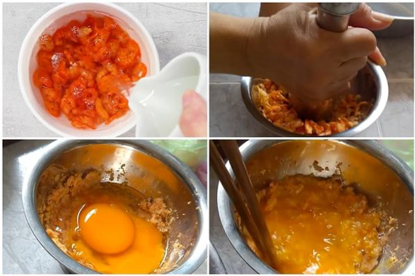
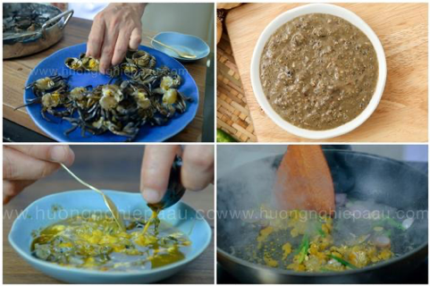

Ingredients
- 1kg freshwater crab
- 500g pork bones
- 200g pork belly
- 50g dry shrimp
- 500g steamed pig blood (optional)
- 300g fried medium firm tofu (small cubes)
- 4 duck eggs
- 5 tomatoes
- 2 tsp minced garlic
- 2 tsp minced scallop
- 10g green onion
- Additional greens: lettuce, bean sprouts, shredded water spinach, Vietnamese mint
- Spices: salt, sugar, MSG, shrimp paste, seasoning powder, annatto oil
Instructions
Prepare the crab and other ingredients:
- Wash the tomatoes and cut them into large wedges.
- Wash the green onions and chop them into small pieces.
- Cut the pig’s blood into bite-sized pieces and rinse them with hot water.
- Soak the dried shrimp in water until soft, then wash and drain them. Grind the shrimp into a paste. After that, add 2 duck eggs to the shrimp mixture and mix well.
- Heat a separate pan on the stove, add 2 tablespoons of annatto oil. When the oil is hot, add the tomatoes and stir-fry for about 1 minute, then turn off the heat.
- Clean the freshwater crabs, separate the shells, remove the apron, and grind the meat into a paste. Take the crab roe from the shells and set it aside. Heat a pan on the stove, add 5 tablespoons of annatto oil.
- Once the oil is hot, add the chopped shallots and garlic, and sauté until fragrant. Then, add the crab roe and stir-fry for about 2 minutes, and turn off the heat.
- Take the ground freshwater crab and soak it in 3 liters of cold water for about 15 minutes. Add 1 teaspoon of salt to the water and stir well with chopsticks.
- After that, strain the crab water through a sieve to collect the liquid and discard the solids. Next, season the strained crab water with 3 teaspoons of sugar, 2 teaspoons of salt, 2 teaspoons of shrimp paste, and ½ teaspoon of MSG. Stir well.
- Then, add the dried shrimp and eggs from earlier into the crab water and mix well.
- Bring the crab water to a boil. Once it starts to boil, the crab paste will float on top of the water. Scoop the paste into a bowl and set it aside. Use a ladle to press the crab paste in the bowl to filter out the excess water.
- Next, break up the crab paste and add 2 duck eggs and 1 tablespoon of chopped green onions. Mix everything together. Then, spoon the crab roe that was sautéed earlier and spread it evenly over the top of the crab paste. Place the bowl in the microwave and cook on medium heat for 3 minutes to cook the eggs.
- After removing all the crab paste that has floated to the surface, add the sautéed tomatoes to the pot of crab broth. Season with 2 tablespoons of fish sauce, 3 teaspoons of salt, 1 teaspoon of sugar, and ½ teaspoon of MSG. Stir well until the seasonings dissolve, then turn off the heat.
- You can also adjust the seasoning to suit your family’s taste. Be careful not to season too strongly, as shrimp paste will be added later when serving. Finally, add the pig’s blood and tofu into the pot, wait for it to boil again, and then turn off the heat.
- Place the noodles in a bowl, scoop the crab paste, and pour the broth along with the tomatoes, pig's blood, and tofu on top. Sprinkle chopped green onions over it. You can also add some Vietnamese pork sausage (chả lụa) if desired.
- You can squeeze in some lime or kumquat, add shrimp paste, ground chili, and fresh herbs, then mix everything together and enjoy.


Prepare the crab broth:
Hover over me for picture.

Prepare bún riêu broth:
Hover over me for picture.

Serve and enjoy the dish: